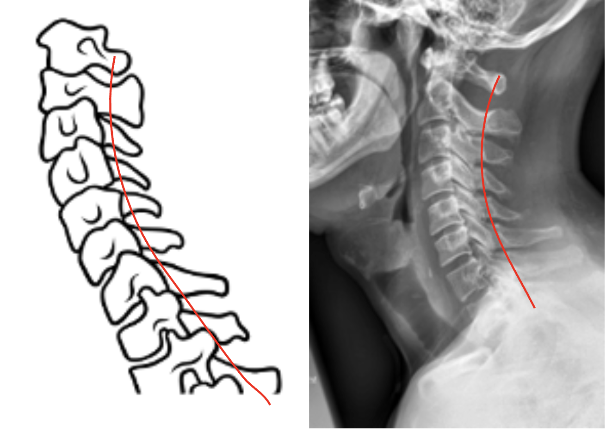
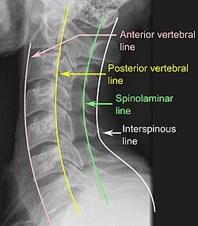

1) Description of Measurement
The Spinolaminar Line is a radiographic reference line used to assess posterior cervical alignment and detect subluxation, dislocation, or instability.
It is drawn along the junction between the laminae and spinous processes (the spinolaminar junction) of consecutive cervical vertebrae on a lateral cervical spine X-ray.
A smooth, continuous curve from C1 to C7 represents normal posterior alignment. Any step-off or discontinuity indicates possible vertebral displacement, facet dislocation, or fracture, particularly in traumatic injuries.
This line complements George’s Line (posterior vertebral body line) as part of a systematic three-line evaluation for cervical stability.
2) Instructions to Measure
3) Normal vs. Pathologic Ranges
4) Important References
White AA, Panjabi MM. Clinical Biomechanics of the Spine. 2nd ed. Philadelphia: Lippincott; 1990.
Harris JH Jr, Edeiken-Monroe B. The Radiology of Emergency Medicine. 3rd ed. Baltimore: Williams & Wilkins; 1993.
Rogers LF. Radiology of Skeletal Trauma. 4th ed. Philadelphia: Saunders; 2014.
Daffner RH, Deeb ZL, Rothfus WE. The posterior vertebral body line: importance in the detection of burst fractures. AJR Am J Roentgenol. 1987 Jan;148(1):93-6. doi: 10.2214/ajr.148.1.93.
Scher AT. Displacement of the spinolaminar line--a sign of value in fractures of the upper cervical spine. S Afr Med J. 1979 Jul 14;56(2):58-61.
5) Other info....
The Spinolaminar Line, along with George’s Line (posterior vertebral line) and the anterior vertebral body line, forms the three-line cervical alignment assessment on lateral X-ray.
A disruption in the spinolaminar line can indicate:
The line is particularly useful in trauma settings to detect subtle malalignment not obvious on the vertebral body lines alone.
CT or MRI should be obtained for confirmation if a break is observed.
Always correlate findings with clinical presentation and neurological status.